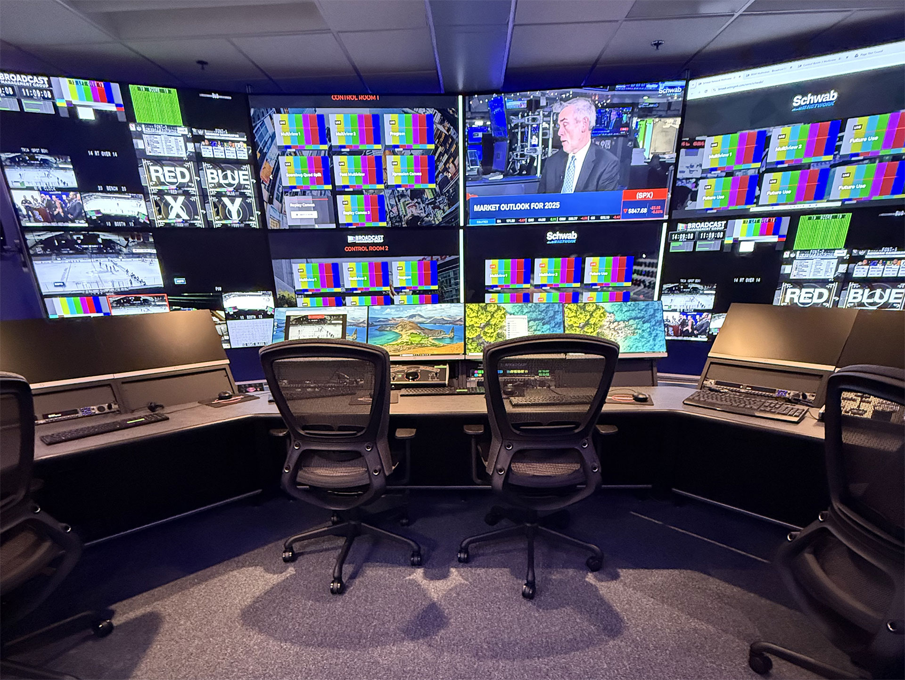
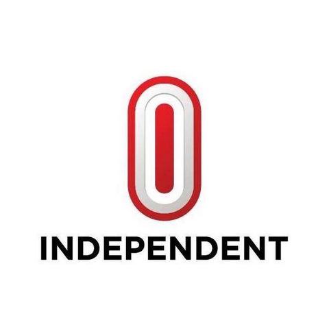
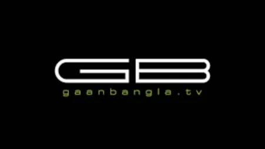
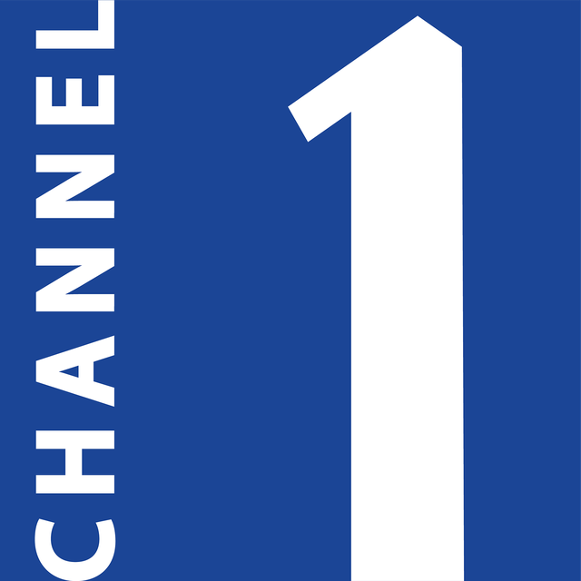

Total Media Solutions
Broadcast Technology. System Integration. Media Solutions.
A professional Broadcast Technology and Media System Integration company delivering complete solutions for television, radio, production, newsroom, post-production, transmission, satellite, OTT and digital media environments.
About Us
Total Media Solutions provides professional technology solutions for broadcasters, television channels, radio stations, production houses, post-production facilities, media organizations, corporate institutions and government organizations.
Our approach combines technology expertise, system engineering, project management and technical support to deliver reliable and scalable media infrastructure.
We work closely with our clients to understand their workflow, operational requirements and future expansion plans before designing the right technology solution. From consultancy and system design to equipment supply, installation, integration, commissioning, training and technical support, we provide end-to-end solutions designed around our clients’ operational requirements.
What We Do
- Broadcast System Integration
- TV Studio Solutions
- Production & Post-Production
- Newsroom Systems
- Graphics & Virtual Production
- Playout & Automation
- MAM & Media Storage
- Master Control Room
- Satellite & Transmission
- IP Broadcast & Networking
- Radio Broadcast
- Live Production & OB
- OTT & Digital Media
- Broadcast Equipment Supply
- Consultancy
- Installation & Commissioning
- Training & Technical Support
Mahmudul Amin Shibly
Founder & CEO
Experience: Over 16 years in Broadcast Technology
- Founder & CEO, Total Media Solutions (August 2015 – Present)
- CEO, Perfect Pack Group, Perfect Pack Ltd. (August 2015 – December 2016)
- Sr. Broadcast Engineer, Independent Television Ltd (April 2013 – July 2015)
- Sr. Engineer, Somoy Television Ltd. (October 2010 – April 2013)
- IT Support Executive, Diganta Television (October 2008 – October 2010)
- Certified in CCNA from CISCO & MCAD from Microsoft
Our Vision
To become a trusted and leading Broadcast Technology and Media System Integration partner in Bangladesh and the wider South Asian market by delivering reliable, innovative and future-ready media technology solutions.
Our Mission
To provide broadcasters and media organizations with professional technology solutions that improve operational efficiency, broadcast quality and long-term business value — combining international technologies with strong local engineering and support.
Core Values
- Integrity & transparency
- Professionalism in every project
- Innovation & reliability
- Customer focus & long-term commitment
Solutions
Complete Media Technology Solutions — covering the full media production and distribution workflow
Television Broadcasting
- Studio
- Production
- Newsroom
- Graphics
- MAM
- Playout
- Automation
- MCR
- Transmission
Radio Broadcasting
- Studio
- Production
- Automation
- Newsroom
- Audio Processing
- Transmission
- Streaming
Newsroom
- Journalists
- Producers
- Editors
- Graphics
- Playout Operations
Production
- Live Production
- Recorded Production
- Multi-camera Content Creation
Post-Production
- Editing
- Shared Storage
- Media Management
- Colour
- Audio
- Finishing
Playout & Automation
- 24/7 Channel Playout
- Scheduling
- Branding
- Automation Systems
MAM & Storage
- Centralized Media Storage
- Asset Management
- Archive
- Backup
- Content Retrieval
Graphics & Virtual Production
- On-Air Graphics
- Real-time Graphics
- Virtual Studios
- AR / VR
- Data-driven Visual Solutions
Satellite & Transmission
- Satellite Uplink / Downlink
- RF
- Contribution
- Distribution
- Transmission Infrastructure
IP Broadcast
- IP-based Media Networking
- Signal Transport
- Hybrid SDI / IP Infrastructure
OTT & Digital Media
- Live Streaming
- VOD
- OTT
- Web TV
- Multi-platform Content Distribution
System Integration
- Concept & Architecture
- Equipment Supply
- Installation
- Integration
- Commissioning
- Handover
Broadcast System Integration
Total Media Solutions provides complete turnkey broadcast system integration services. We manage the complete project lifecycle from initial requirement analysis and system architecture through equipment supply, installation, integration, testing and commissioning.
Our Integration Services
- Requirement Analysis — Understanding the client’s operational and technical requirements
- System Architecture — Designing the complete technical workflow and infrastructure
- Equipment Selection — Selecting suitable technologies based on performance, compatibility and budget
- System Design — Developing detailed audio, video, networking and infrastructure designs
- Procurement & Supply — Sourcing and supplying required broadcast equipment
- Installation — Professional equipment, rack, cabling and infrastructure installation
- Integration — Connecting hardware, software, networking and broadcast systems
- Testing & Commissioning — Testing system performance, redundancy and operational workflows
- Training & Handover — Training operational and technical teams and completing project documentation
Solution Categories
We design and integrate television studios for news, talk shows, entertainment, education, corporate communication and live production. Our studio solutions provide an efficient workflow from Camera to Production Control Room to Master Control Room and Transmission.
Studio Solutions
- News Studios
- Production Studios
- Talk Show Studios
- Virtual Studios
- Green Screen Studios
- Multi-purpose Studios
- Corporate Studios
- Streaming Studios
Integrated Studio Systems
- Broadcast Cameras & Camera Control
- Video Switchers
- Audio Consoles & Microphones
- Studio Lighting
- Intercom, IFB & Tally
- Teleprompters
- Monitoring & Graphics
- Recording & Streaming
The Production Control Room is the heart of live television production. We design integrated PCR environments for multi-camera production, news, talk shows, entertainment and live events.
PCR Systems
Modern news production requires fast communication between newsroom, production, graphics, editing and playout. We provide integrated newsroom solutions designed to streamline the complete news production workflow.
Workflow: News Gathering → Planning → Writing → Editing → Graphics → Rundown → Production → Playout
Newsroom Solutions
We provide professional graphics and virtual production solutions for broadcasters and content producers.
Graphics
- On-Air Graphics & Lower Thirds
- Channel Branding
- News / Election / Sports / Weather Graphics
- Data Visualization
- Tickers
- Social Media Graphics
Virtual Production
- Virtual Studios
- Green Screen
- Real-Time Graphics
- AR / VR
- Augmented Reality
- Virtual Sets & Tracking Systems
We provide professional playout and automation solutions for television channels and media organizations. Our systems are designed for reliable and efficient 24/7 broadcasting.
Media is one of the most valuable assets of any broadcaster. We provide centralized media management, storage and archive solutions that help organizations securely manage their content throughout its lifecycle.
Media Lifecycle: Ingest → Edit → Produce → Store → Archive → Retrieve → Broadcast
We design MCR systems for centralized monitoring, control and distribution of broadcast channels.
Total Media Solutions provides satellite and transmission infrastructure for broadcasters, television channels, teleports and media organizations.
Satellite Solutions
- Satellite Uplink / Downlink
- Earth Station / DTH / VSAT
- IRD, Encoder, Decoder, Modulator
- RF Systems & Antenna Systems
- Satellite Monitoring
Contribution
- DSNG / ENG
- Flyaway Systems
- IP Contribution / SRT
- Fiber Contribution
- Microwave Links
Broadcast is rapidly moving toward IP-based infrastructure. We design and integrate modern broadcast networks supporting high-bandwidth video, audio and data workflows. We can provide Hybrid SDI/IP as well as full IP broadcast architecture depending on project requirements.
We provide complete technology solutions for FM, AM, digital and IP-based radio operations.
We provide mobile and outdoor production solutions for news, sports, entertainment and live events.
Extend your content from traditional broadcast platforms to digital audiences. One Content. Multiple Platforms.
Satellite | Cable | IPTV | OTT | Web | Mobile | Social Media
Products
Cameras & Accessories
- Broadcast Cameras
- Studio Cameras
- PTZ
- Lenses
- Tripods
- Pedestals
Production
- Video Switchers
- Video Servers
- Replay
- Multiviewers
- Monitors
Audio
- Audio Consoles
- Microphones
- Audio Processors
- Monitoring
- Intercom
Graphics
- Graphics Engines
- CG
- Virtual Production
- AR/VR
Editing
- NLE
- Workstations
- Shared Storage
Playout
- Playout Servers
- Automation
- Scheduling
- Channel Branding
Networking
- Broadcast Switches
- IP Gateways
- Signal Transport
Transmission
- Encoders
- Decoders
- Modulators
- IRDs
- RF Systems
Professional Services
Consultancy — Plan Before You Invest
Our consultancy services help clients make informed technology decisions before investing in broadcast infrastructure.
- Technical Audit & Workflow Assessment
- Facility Planning & System Architecture
- Technology & Equipment Evaluation
- Budget Planning & BOM / BOQ
- Tender Specification
- Upgrade, Migration & Expansion Planning
Project Management — From Planning to Delivery
Structured project management throughout the implementation lifecycle, aligned with scope, schedule, budget and technical requirements.
- Requirement
- Design
- Specification
- Procurement
- Installation
- Integration
- Testing
- Commissioning
- Training
- Handover
- Support
Installation & Commissioning
Professional implementation by our engineering team.
- Rack & Equipment Installation
- Cable Management, SDI & Fiber
- IP Networking & System Configuration
- Software Installation & Hardware Integration
- Signal, Network, Redundancy & Performance Testing
- Final Commissioning
Training — Empowering Your Team
Practical training programs customized to the installed system and operational requirements.
- System Operation & Broadcast Workflow
- Production, Newsroom & Graphics
- Playout, Automation, MAM & Storage
- Network Operations & System Administration
- Basic Troubleshooting
Technical Support — Support When You Need It
Our relationship continues after project commissioning to maintain system reliability and operational continuity.
- Remote & On-site Support
- Preventive & Corrective Maintenance
- System Health Check & Troubleshooting
- Software Updates & Hardware Replacement
- System Optimization, AMC, Upgrade & Expansion
Full Service Coverage
Technology is only one part of a successful broadcast project. Our professional services also include:
- System Design & Workflow Design
- Technical Audit & Feasibility Study
- Equipment Procurement
- System Integration, Testing & Commissioning
- Preventive Maintenance
- System Upgrade & Facility Migration

Complete Broadcast Workflow
Content Acquisition → Ingest → Newsroom → Production → Graphics → MAM/Storage → Playout → Automation → MCR → Transmission → Satellite / IP / OTT Distribution
- HD / UHD TV studio design with recording and on-air facilities
- Site survey, documentation, full broadcast equipment setup & maintenance
- Chroma wall, virtual studio and video wall solutions
- Digital customized playout with logo, ticker and advertisement insert
- Campus radio, FM, online radio, Web TV, IPTV and Live TV apps
- LAN, WAN, Wi‑Fi and complete networking solutions
Why Total Media Solutions
One Partner. Complete Broadcast Solutions.
End-to-End Capability
From consultation and design to installation, commissioning and support.
Broadcast-Focused Expertise
Solutions designed specifically for professional media environments.
Multi-Vendor Integration
We design solutions based on interoperability and workflow requirements.
Customized Architecture
Every project is designed according to the client’s operational needs.
Professional Project Delivery
Structured implementation from planning through final handover.
Scalable Technology
Systems designed for future upgrades and expansion.
Long-Term Support
Technical support and maintenance beyond project completion.
Our Workflow
How We Deliver Your Project
Discover
We understand your requirements, workflow and business objectives.
Analyze
We assess your current infrastructure and identify technical requirements.
Design
We create the system architecture, workflow and technical design.
Specify
We prepare the equipment specification and BOM/BOQ.
Supply
We procure and deliver the required technology.
Integrate
We install, configure and integrate the complete system.
Test
We test performance, workflow and redundancy.
Commission
We bring the system into operational service.
Train
We train the client’s technical and operational teams.
Support
We provide ongoing technical assistance and maintenance.
Our Partners & Clients
Trusted by leading television networks and media organizations across Bangladesh



Projects
Our Work. Our Experience. — TV Studio, PCR, MCR, Newsroom, Playout, MAM, Storage, Graphics, Radio, Satellite, Transmission, IP Broadcast, OTT, Live Production & System Upgrade
- All
- Video Walls
- Studio Setup
- Virtual / Green Screen
- Broadcast Systems
- Live / OB
- Partners
{kind=link}
{kind=link}
{kind=link}
{kind=link}
{kind=link}
{kind=link}
{kind=link}
{kind=link}
{kind=link}
{kind=link}
{kind=link}
{kind=link}
{kind=link}
{kind=link}
{kind=link}
{kind=link}
{kind=link}
{kind=link}
Selected Project Highlights
Maasranga TV
Video wall with LED lighting integration
RTV Bangladesh
Bengal Studio, PCR, central HD storage & archival
Ekattor TV (71 Television)
Studio, PCR, Soft LED video wall & equipment supply
China Radio International (CRI)
Studio setup, PCR and product supply
Bijoy TV
Broadcast studio with green screen and lighting
Nagorik TV (Jadoo Media)
Studio teleprompter solution
ULAB MSJ Department
HD camera setup with chroma shooting wall
Bangladesh Film Archive
Archival and restoration solutions
Bangladesh Television
National broadcaster setup and modernization
IPTV Channels
STV Bangla, Movie Bangla TV, Probashi Bangla TV, World Vision, Zoom Vision, Joy Jatra, Alif TV, Max TV & more
Satellite Channels Served
RTV, Jamuna TV, Somoy TV, Nagorik TV, SATV, Boishakhi, Gaan Bangla, Ekushey, ATN News, Independent, DBC, Asian TV, T-Sports, Green TV
Sole Distributors
{kind=link}
Prompter People Inc
USA
{kind=link}
{kind=link}
Industries We Serve
Technology solutions tailored to every media sector
Broadcast & Television
TV Channels | News Channels | Satellite Channels | IPTV | Cable Networks
Radio
FM Radio | AM Radio | Digital Radio | Internet Radio
Media Production
Production Houses | Post-Production Facilities | Content Producers
Government & Institutions
Government Media | Educational Institutions | Public Sector Organizations
Corporate
Corporate Studios | Corporate Communications | Streaming Facilities
Digital Media
OTT Platforms | Streaming Companies | Digital Publishers
Frequently Asked Questions
Answers about our broadcast technology services, capabilities and how we support your next media facility.
What broadcast technology services does TMS provide?
TMS provides end-to-end broadcast solutions including studio setup, PCR & MCR, newsroom, graphics & virtual production, playout & automation, MAM & storage, satellite & transmission, IP broadcast, radio, live/OB production, OTT, equipment supply, consultancy, project management, training and AMC support.
Do you provide services for both TV and Radio stations?
Yes. We deliver television and radio solutions — acoustic and studio design, automation, transmission, streaming and complete broadcast infrastructure for both mediums.
Can TMS handle government and educational projects?
Absolutely. We have experience with Bangladesh Film Archive, Bangladesh Television, ULAB MSJ Department studios and other institutional broadcasting requirements.
What is your experience with IPTV and digital broadcasting?
We have implemented IPTV and digital solutions for multiple channels and specialize in analog-to-digital upgrades, HD/4K implementations and multi-platform distribution (Satellite, Cable, IPTV, OTT, Web, Mobile, Social).
Do you provide maintenance and support services?
Yes. We offer remote and on-site support, preventive and corrective maintenance, system health checks, software updates, AMC contracts and upgrade planning.
How can I get a quote for my broadcast project?
Contact our Bangladesh office at +8801552393627 / +8801715327111 or Singapore office at +65 87920087 / +65 91126274, or email info@tmsbd.com / shibly.amin@tmsbd.com. We will schedule a consultation and provide a detailed proposal.
Contact Us
Let’s Build Your Next Media Facility — Talk to Our Broadcast Solutions Team
Address
Bangladesh Office
77/3, 8-B, Dilara Tower, Bir Uttom CR Datta Road, Hatirpul, Dhaka-1205, Bangladesh
Singapore Liaison Office
101 Kitchener Road, Unit: 03#02, Singapore: 208511
Call Us
Bangladesh: +8801552393627, +8801715327111
Singapore: +65 87920087, +65 91126274
Email Us
info@tmsbd.com, shibly.amin@tmsbd.com
Web: www.tmsbd.com
Start Your Project
Whether you are launching a new television channel, upgrading an existing studio, building a newsroom, establishing a playout facility or moving toward IP-based broadcasting, Total Media Solutions can help you plan and implement the right technology.
Tell us about your project, and our team will help you develop the right technical solution.
Broadcast Technology & System Integration
Bangladesh | South Asia